Honda
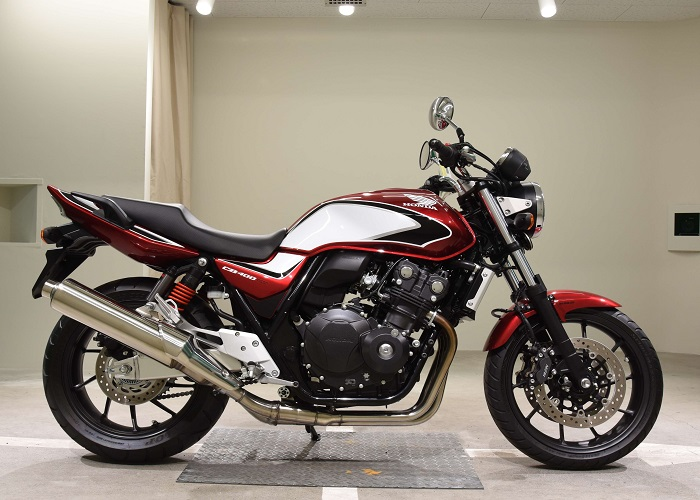
Honda CB400SF HyperVTEC Revo 05/08/2010
- Canon PowerShot S95
- 22.5mm
- ƒ/5.6
- 1/4212
- 80
Легендарный мотоцикл компании хонда выпускавшийся аж с 1992 года. Honda CB400 является одним из наиболее популярных мотоциклов в своём классе. Этот скоростной, динамичный мотоцикл весьма надёжен и прост в эксплуатации. Экономические характеристики удачно гармонируют с манёвренностью и лёгкостью конструкции. Классический дизайн который никогда не устареет.
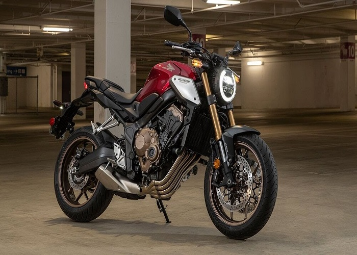
Honda CB650R Neo Sports Cafe 03/05/2020
- Canon EOS R Kit
- 30 mm
- ƒ/4.2
- 1/5565
- 75
Модель нейкеда Honda CB650R впервые была представлена в 2018 году на выставке EICMA в Милане. Мотоцикл позиционировал себя как преемник Honda CB650F (хотя она всё еще была доступна параллельно) и младшая модель в новой линейке Neo Sports Café, где главной моделью выступала флагманская Honda CB1000R. Все мотоциклы этой линейки получили общие черты старшей CB1000R.
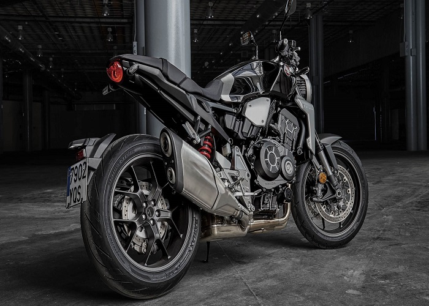
Honda CB1000R Neo Sports Cafe 01/04/2019
- Pentax K-1 Kit
- 26.5 mm
- ƒ/4.9
- 1/4456
- 75
Модель нейкеда Honda CB1000R впервые была представлена в ноябре 2007 года на выставке Милан Байк Шоу в качестве замены морально устаревшей модели Honda CB900F Hornet. За основу модели был взят двигатель от спортивной версии Honda CBR1000RR (2007 года), который был перенастроен и дефорсирован для повышения тяги на низких и средних оборотах. В итоге мотор стал выдавать около 125 л.с. мощности и 99 Нм крутящего момента, доступного уже на 7750 об/мин. Стиль мотоцикла имеет общие визуальные черты с моделью Honda Hornet 600 2007 года.
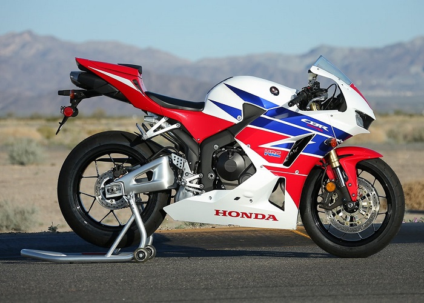
Honda CBR600RR 22/07/2016
- Nikon D5 Body
- 24 mm
- ƒ/5
- 1/5225
- 65
Модель спортивного мотоцикла Honda CBR600RR появилась в 2003 году в качестве преемника Honda CBR600F4i по образу гоночной версии RC211V. В отличие от F4i, новая модель CBR600RR получила более спортивные характеристики и эргономику, а также собрала в себе все передовые, на тот момент, гоночные технологии Honda: новые рама и маятник, новые подвески, впрыск топлива с двойными дроссельными заслонками (Dual Stage Fuel Injection - DSFI), обновленные тормоза и пр.

Honda CBR1000RR FireBlade 18/02/2018
- Canon PowerShot S95
- 22.5 mm
- ƒ/5.6
- 1/1000
- 80
Модель спортивного мотоцикла Honda CBR1000RR Fireblade появилась на рынке в 2004 году, придя на смену Honda CBR954RR Fireblade. В отличие от прошлой версии, новая модель получила целый ряд технических отличий и черты гоночного прототипа RC211V - новая рама, подвески и двигатель, новая тормозная система с радиальными суппортами, электронный рулевой демпфер (Honda Electronic Steering Damper - HESD), инжектор с двойными дроссельными заслонками (Dual Stage Fuel Injection - DSFI) и др.
ГАЛЕРЕЯ
Если вам понравилось и вы хотите увидеть больше:

Honda CB400SF
Honda CB650R
Honda CB1000R
Honda CBR600RR

Honda CBR1000RR FireBlade
А также ссылки на Wiki:
Honda CB400SF
Honda CB650R
Honda CB1000R
Honda CBR600RR
Honda CBR1000RR FireBlade
Suzuki
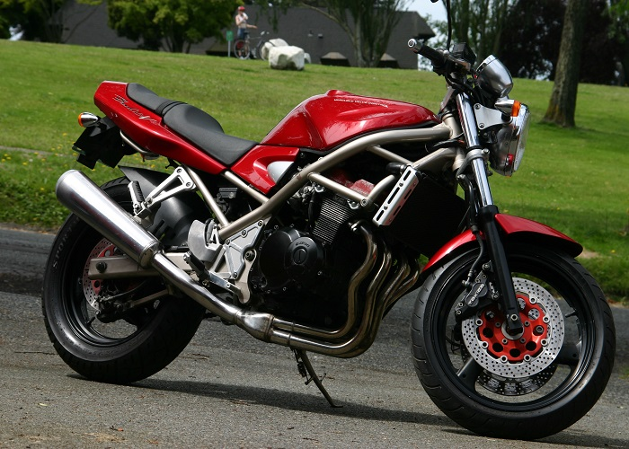
Suzuki GSF400 Bandit 31/04/2002
- Canon EOS R Kit
- 30 mm
- ƒ/4.2
- 1/5565
- 80
Модель классического дорожного мотоцикла Suzuki GSF 400 Bandit появилась в 1989 году и изначально была доступна только на внутреннем японском рынке. С 1991 года модель начинает официально поставляться в страны Европы и Северной Америки. На рынке России в подавляющем большинстве случаев присутствуют внутрияпонские модификации. За основу Suzuki Bandit 400 был взят рядный 4-цилиндровый двигатель жидкостного охлаждения, объемом 398 см³, выдающий 59 л.с. мощности и 38 Нм крутящего момента. С 1993 года в связи с изменением японского законодательства максимальная мощность двигателя была снижена до 53 л.с. Данный мотор не был самостоятельно разработкой, а перекочевал со спортивной модели Suzuki GSX-R400.
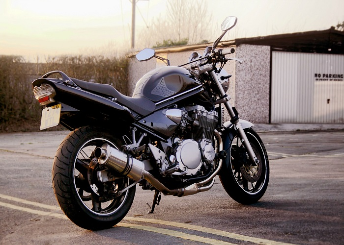
Suzuki GSF600N Bandit 22/04/2005
- Canon PowerShot S95
- 22.5 mm
- ƒ/5.6
- 1/1000
- 80
Модель классического дорожного мотоцикла Suzuki GSF 600 Bandit появилась на рынке в 1995 году. С 1996 года модель пополнилась модификацией с передним обтекателем, получившей название - Suzuki GSF600S Bandit. Модель была ориентирована на европейский рынок, однако S-версия поставлялась также в Северную Америку. За основу модели был взят рядный 4-цилиндровый двигатель воздушно-масляного охлаждения, объемом 599 см³, выдающий до 80 л.с. мощности и до 62 Нм крутящего момента. Мотор - оборотистый, с максимальными характеристиками на 8500-9500 об/мин и ограничителем на 12000 об/мин. Данный мотор не был самостоятельной разработкой, а перекочевал со спорт-туриста Suzuki GSX600F Katana.
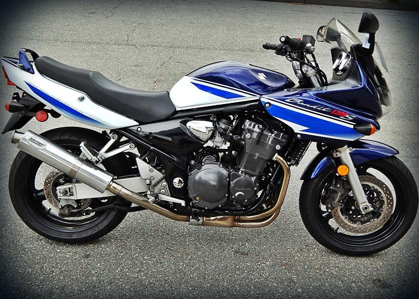
Suzuki GSF1200S Bandit 09/12/2008
- Nikon D5 Body
- 24 mm
- ƒ/5
- 1/5225
- 65
Модель дорожного мотоцикла Suzuki GSF1200 Bandit впервые была представлена в 1995 году на японском рынке. С 1996 года модель стала поставляться на экспорт в страны Европы и Северной Америки в двух модификациях - классическая (Suzuki GSF1200 Bandit) и спорт-туристическая (Suzuki GSF1200S Bandit). За основу модели был взят двигатель от Suzuki GSX-R1100, который был существенно изменен и перенастроен, в результате чего объем увеличился до 1157 см³, а максимальная мощность снизилась до 98 л.с., что положительно сказалось на характеристике крутящего момента, который серьезно вырос в зоне низких и средних оборотов.
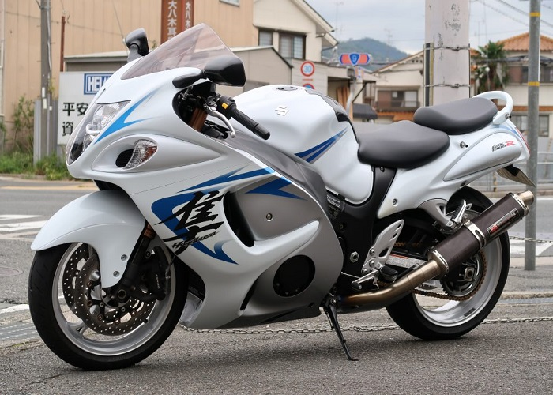
Suzuki GSX1300-R Hayabusa 17/07/2011
- Canon EOS 6D Mark II Kit
- 24.5 mm
- ƒ/5
- 1/2500
- 70
Модель спортивного мотоцикла Suzuki GSX1300R Hayabusa была впервые представлена в 1999 году. Эта модель стала ответом компании Suzuki на самые быстрые, на тот момент, серийные мотоциклы других японских производителей - CBR1100xx Blackbird и Kawasaki ZZ-R1100. Технические характеристики и максимальная скорость Hayabusa превзошли своих конкурентов и на время сделали модель самой быстрой в мире с рекордом скорости 312 км/ч. Однако, данная скорость могла существовать лишь на бумаге, поскольку в этом же году японские и европейские мотопроизводители, заключили соглашение, согласно которому максимальная скорость, не могла превышать 299 км/ч (по спидометру). Тем не менее, модель Suzuki GSX1300R Hayabusa, даже с таким ограничением, продолжительное время считалась лидером в классе.
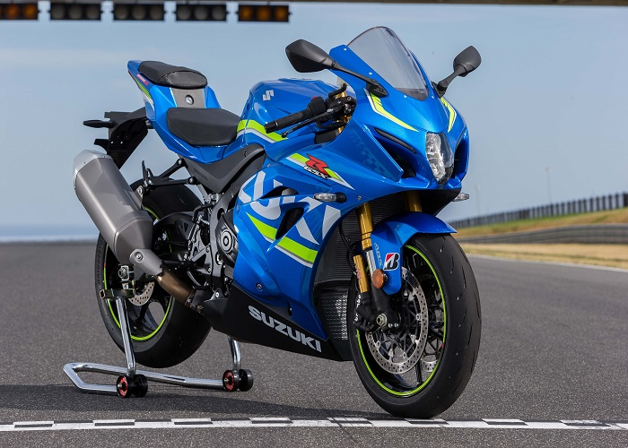
Suzuki GSX-R 1000 11/04/2020
- Canon EOS R Kit
- 30 mm
- ƒ/4.2
- 1/5565
- 70
Модель спортивного мотоцикла Suzuki GSX-R 1000 впервые была представлена в 2001 году. На тот момент в качестве основы мотоцикла была использована модель Suzuki GSX-R 750, двигатель которой был немного увеличен в объеме, а рама была толще на 0,5 мм (что, по утверждению Suzuki, повысило жесткость на 10%).
Kawasaki
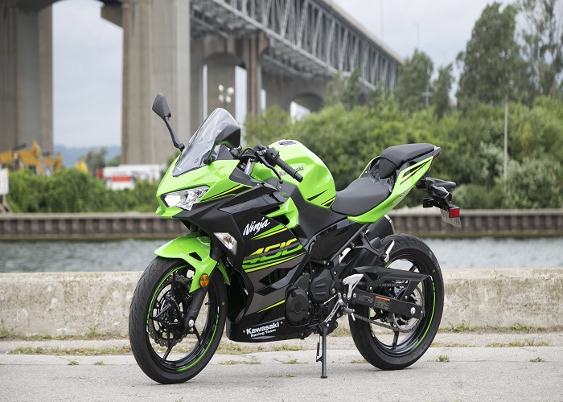
Kawasaki Ninja 400 07/05/2018
- Panasonic Lumix DMC-G7 Kit
- 25 mm
- ƒ/4.9
- 1/2500
- 60
Модель бюджетного спортивного мотоцикла Kawasaki Ninja 400 появилась на рынке в 2018 году, придя на смену Kawasaki Ninja 300. Новая модель, по сравнению с предшественником, получила переработанный внешний вид, новую приборную панель, двигатель и ходовую часть (новая размерность колес, новая тормозная система, измененные настройки подвески). Заводское обозначение - EX400G. За основу Kawasaki Ninja 400 (2018+) был взят рядный 2-цилиндровый двигатель жидкостного охлаждения, объёмом 398 см³, выдающий 45 л.с. мощности и 38 Нм крутящего момента. Максимальные характеристики - на 8000-10000 об/мин.
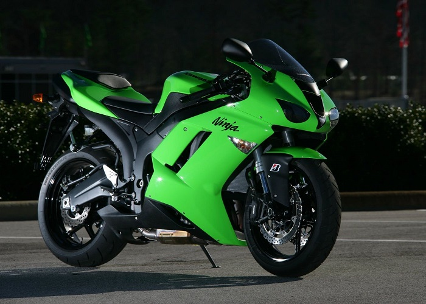
Kawasaki ZX6R(636) Ninja 14/04/2007
- Hasselblad Lunar Limited Edition Kit
- 30 mm
- ƒ/4
- 1/5700
- 100
Модель спортивного мотоцикла Kawasaki ZX-6R появилась в 1995 году. За основу мотоцикла были взяты наработки и технологии старшей версии Kawasaki ZX-9R, включая фирменную систему инерционного наддува (Ram-Air), дающую прирост мощности на высокой скорости движения. Данное поколение получило обозначение ZX600F и отличалось максимальной мощностью в 105 л.с.
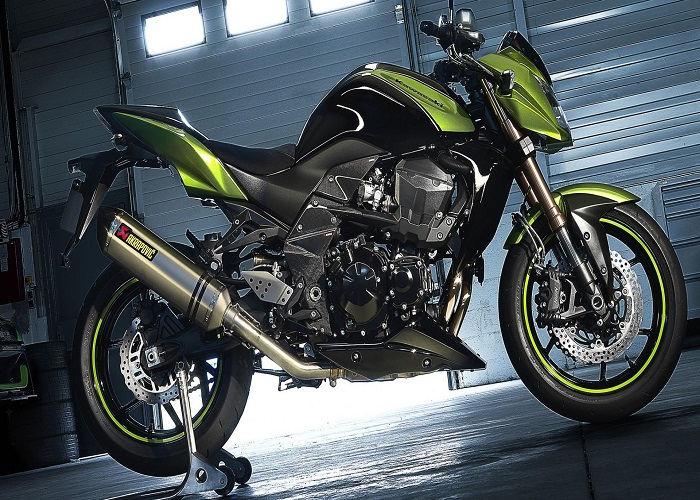
Kawasaki Z750-R 18/12/2012
- Olympus OM-D E-M1X Body
- 24.5 mm
- ƒ/5.2
- 1/3000
- 65
Модель нейкеда Kawasaki Z750 впервые была представлена в 2003 году на Миланском мотошоу, а серия началась с моделей 2004 года. Мотоцикл был ориентирован на рынок азиатских стран, Северной Америки и Европы. В Японии данная модель практически не представлена.
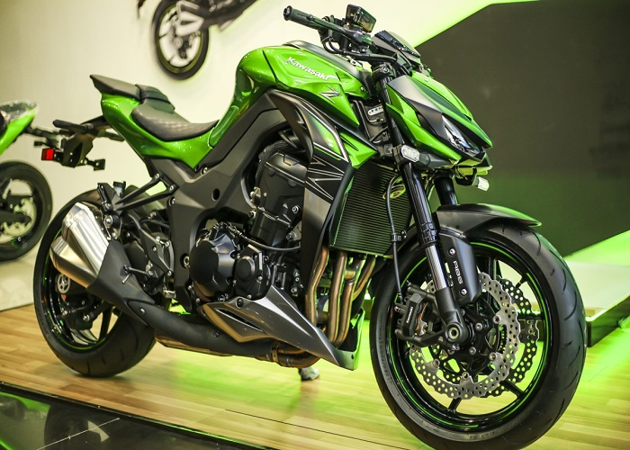
Kawasaki Z1000-R 27/03/2018
- Canon PowerShot S95
- 22.5 mm
- ƒ/5.6
- 1/1000
- 80
Модель нейкеда Kawasaki Z1000 была представлена в 2003 году как последователь легендарной Z-серии, выпускаемой в 70-е годы прошлого века. За основу модели была взята стальная рама, элементы пластика от спортивного Kawasaki ZX-6R и дефорсированный двигатель от Kawasaki ZX-9R объемом 953 см³.
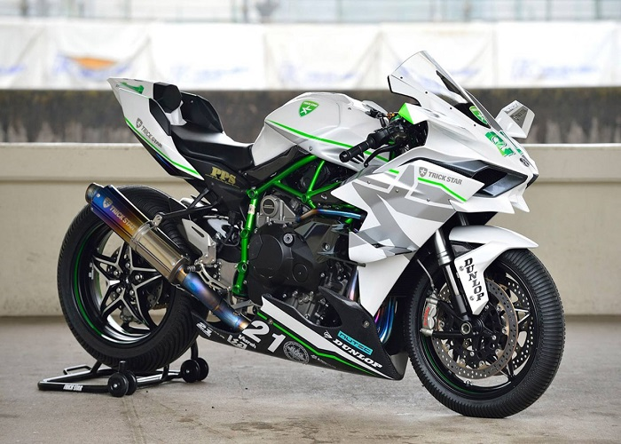
Kawasaki Ninja H2R 16/07/2019
- Pentax K-1 Kit
- 26.5 mm
- ƒ/4.9
- 1/4456
- 75
Модель спортивного мотоцикла Kawasaki Ninja H2 была анонсирована в 2014 году, а серийное производство и официальные продажи стартовали с 2015 года. Данная модель стала первым серийным спортбайком, оснащенным наддувом. В качестве рамы была использована не алюминиевая литая конструкция, применяемая на современных спортбайках, а стальной решетчатый каркас, специально разработанный и изготовленный для модели H2, дающий возможность более эффективно рассеивать тепло от двигателя. Для изготовления данной рамы применялся специальный роботизированный сварочный аппарат.
Yamaha
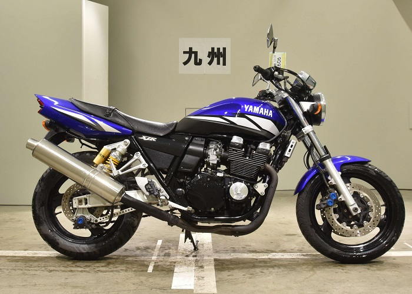
Yamaha XJR400-R3 09/04/2010
- Sony Alpha ILCE-6500 Kit
- 28 mm
- ƒ/5.1
- 1/5325
- 58
Модель классического дорожного мотоцикла Yamaha XJR400 впервые была представлена в 1993 году для внутреннего японского рынка и просуществовала вплоть до 2009 года. Первоначально модель имела достаточно простое оснащение и ничем не выделялась на фоне конкурентов, однако со временем претерпела ряд рестайлингов и получила целый ряд технических преимуществ. В 1994 году модель меняет свое название, добавляя букву S - Yamaha XJR400S. Обновленная версия получает более совершенные настройки двигателя и карбюраторов, что повышает показатель крутящего момента с 34 до 38 Нм. Кроме того, в стандартном оснащении идет задняя подвеска Ohlins.
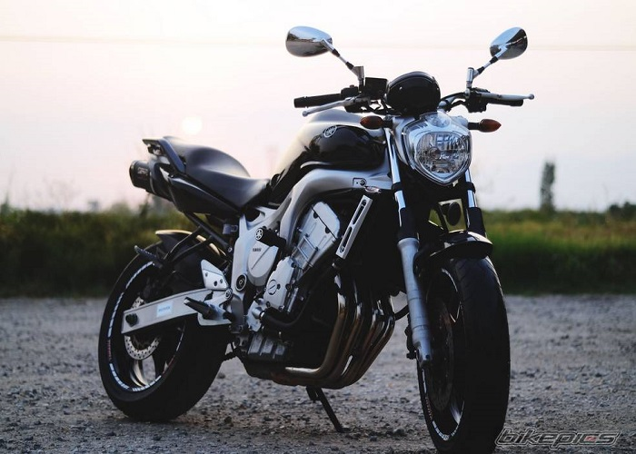
Yamaha FZ6N 19/11/2018
- Pentax K-1 Kit
- 26.5 mm
- ƒ/4.9
- 1/4456
- 72
Серия дорожных мотоциклов Yamaha FZ6 начинает свою историю с 2004 года, когда на смену морально устаревшей Yamaha FZS 600 приходят сразу две модификации - Yamaha FZ6N и Yamaha FZ6S. Первая версия представляет собой классический современный нейкед, вторая - тот же мотоцикл, но с передним полуобтекателем. За основу Yamaha FZ6 был взят двигатель от спортивной Yamaha YZF-R6, который немного дефорсировали, улучшив крутящий момент на низах и уменьшив максимальную мощность до 98 л.с.. Двигатель высокооборотистый и выдает максимальные характеристики на 10000-12000 об/мин.
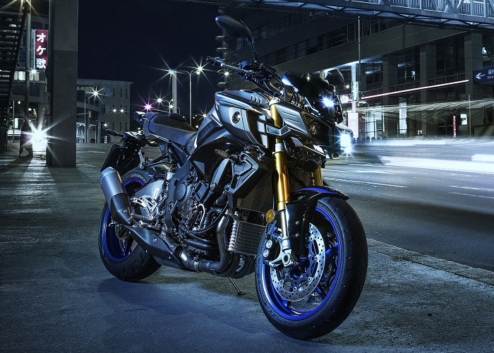
Yamaha MT-10 26/10/2019
- Canon PowerShot S95
- 22.5 mm
- ƒ/5.6
- 1/1000
- 80
Модель нейкеда Yamaha MT-10 впервые была анонсирована в конце 2015 года, а в серию пошла с весны 2016. Причиной появления данной модели стало желание Yamaha представить рынку флагманский литровый нейкед, включающий в себя все передовые технологии. Поскольку концепция нейкеда предполагает базу спортбайка, "донорская" Yamaha R1 2016 года кардинально отличается от таковой образца 2006 года, и в Yamaha посчитали, что пора обновить топовую нейкед-модель и дать рынку не только уникальный внешний вид, но и выдающиеся технические характеристики, которых нет у конкурентов. Так на свет появился - Yamaha MT-10.
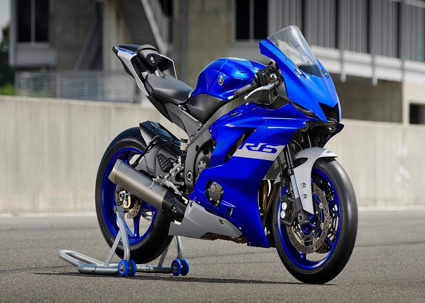
Yamaha YZF R6 03/02/2020
- Olympus OM-D E-M1X Body
- 24.5 mm
- ƒ/5.2
- 1/3000
- 65
Модель спортивного мотоцикла Yamaha R6 (YZF-R6) появилась на рынке в 1998 году (1999 модельный год) в качестве преемника Yamaha YZF600R Thundercat (которая параллельно также выпускалась, но позиционировала себя как спорт-турист) и в роли младшей версии модели Yamaha R1 (YZF-R1). За основу был взят новый двигатель, объемом около 600 см³, жидкостного охлаждения, выдающий до 120 л.с. По сравнению с Thundercat, мотор стал более короткоходным, получил кованые поршни с низким коэффициентом трения, новый коленвал, шатуны, систему зажигания, двухконтактные свечи и карбюраторы Mikuni с датчиком положения дросселей.
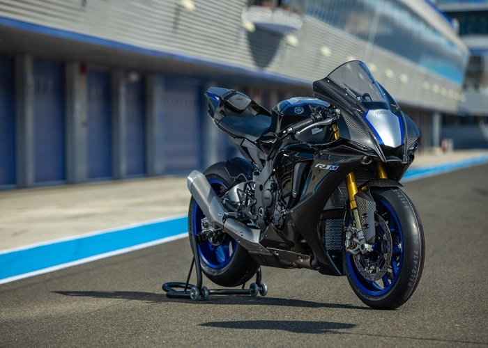
Yamaha YZF R1M 23/01/2020
- Fujifilm X-T3 Kit
- 26 mm
- ƒ/5
- 1/3553
- 62
Модель флагманского спортивного мотоцикла Yamaha YZF-R1 была впервые представлена 15 сентября 1997 года на выставке EICMA в Милане. Данный мотоцикл стал последователем Yamaha YZF1000R Thunderace (несмотря на то, что обе модели какое-то время выпускались параллельно, Thunderace стал позиционировать на рынке в качестве спорт-туриста), получившим новую раму, новое поколение двигателя Genesis, вилку перевернутого типа и улучшенные характеристики для трека - эргономика, снижение веса, улучшение управляемости, повышенная мощность двигателя.